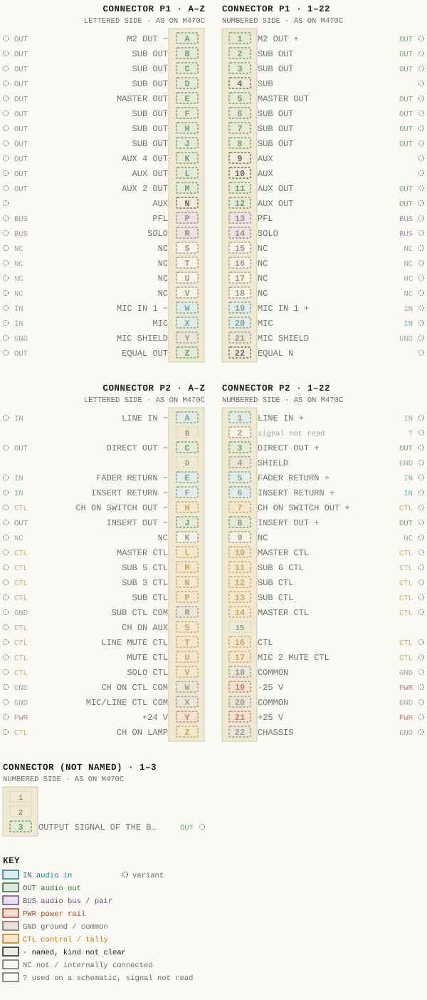
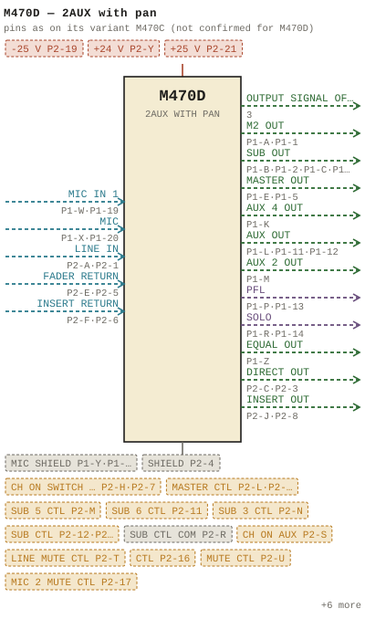

M470D — 2AUX with pan
| Type | module |
| Category | INPUT-PRE-AMPS |
| Try it | simulator & front panel |
| Earliest dated evidence | 1977|10 — estimate from a dated variant |
| Evidence | from M470 |
| Confidence | family |
| Variants | M470, M470A, M470C, M470E |
| Folder | Modules/INPUT-PRE-AMPS/M470D |
Pictures


M470D.pinout.svg

M470D.connections.svg 1977 - M470D - Input Module 2.jpg
1977 - M470D - Input Module 2.jpg 1977 - M470D - Input Module 3.jpg
1977 - M470D - Input Module 3.jpg 1977 - M470D - Input Module 3_small.jpg
1977 - M470D - Input Module 3_small.jpg 1977 - M470D - Input Module 4.jpg
1977 - M470D - Input Module 4.jpg 1977 - M470D - Input Module 4_small.jpg
1977 - M470D - Input Module 4_small.jpg 1977 - M470D - Input Module 5.jpg
1977 - M470D - Input Module 5.jpg 1977 - M470D - Input Module 5_small.jpg
1977 - M470D - Input Module 5_small.jpg 1977 - M470D - wbsps - module - m470d input module 001_small.jpg
1977 - M470D - wbsps - module - m470d input module 001_small.jpg 1977 - M470D - wbsps - module - m470d input module 002_small.jpg
1977 - M470D - wbsps - module - m470d input module 002_small.jpg 1977 - M470D - wbsps - module - m470d input module 003_small.jpg
1977 - M470D - wbsps - module - m470d input module 003_small.jpgFront panel
Price history
| Year | Kind | Price | Listed as | Effective | Source |
|---|---|---|---|---|---|
| 2005|38 | used market value | 150.00 | M470D 2AUX with pan | wbsps - website ARCHIVE/WBSPS 2008/ARCHIVE/old website/PriceGuide.htm | |
| 2006|39 | used market value | 150.00 | M470D 2AUX with pan | wbsps - website ARCHIVE/WBSPS 2008/ARCHIVE/jan 2006 shell/priceguide.htm |
Pinout & connections
No page of its own numbers M470D's contacts: these are its variant M470C's, drawn faded — not confirmed for M470D.
pinout (SVG) · connections (SVG) · pins (JSON)
Pin evidence — 86 contacts
| Pin | Signal | Kind | Confidence | Read from | Source |
|---|---|---|---|---|---|
| 3 | OUTPUT SIGNAL OF THE BOOSTER AMPLIFIER | audio out | variant | prose | 1977 - M470C - Input Module (2).pdf, p. 5 “CIR CUIT DESCRIPTION H470C INPUT MODUL E DIRECT Output The output signal of the booster amplifier feeds the DIRECT output a t connector Pl,…” |
| P1-A | M2 OUT | audio out | variant | rto-144 | M470C.rto144.json, p. 1 |
| P1-1 | M2 OUT | audio out | variant | rto-144 | M470C.rto144.json, p. 1 |
| P1-B | SUB OUT | audio out | variant | drawing rows | 1977 - M470C - 470-04-008 - CONNECTOR REAR VI…, p. 1 “row 2 of the drawing, left of the pin column” |
| P1-2 | SUB OUT | audio out | variant | drawing rows | 1977 - M470C - 470-04-008 - CONNECTOR REAR VI…, p. 1 “row 2 of the drawing, right of the pin column” |
| P1-C | SUB OUT | audio out | variant | drawing rows | 1977 - M470C - 470-04-008 - CONNECTOR REAR VI…, p. 1 “row 3 of the drawing, left of the pin column” |
| P1-3 | SUB OUT | audio out | variant | drawing rows | 1977 - M470C - 470-04-008 - CONNECTOR REAR VI…, p. 1 “row 3 of the drawing, right of the pin column” |
| P1-D | SUB OUT | audio out | variant | drawing rows | 1977 - M470C - 470-04-008 - CONNECTOR REAR VI…, p. 1 “row 4 of the drawing, left of the pin column” |
| P1-4 | SUB | named, kind not clear | variant | drawing rows | 1977 - M470C - 470-04-008 - CONNECTOR REAR VI…, p. 1 “row 4 of the drawing, right of the pin column” |
| P1-E | MASTER OUT | audio out | variant | drawing rows | 1977 - M470C - 470-04-008 - CONNECTOR REAR VI…, p. 1 “row 5 of the drawing, left of the pin column” |
| P1-5 | MASTER OUT | audio out | variant | drawing rows | 1977 - M470C - 470-04-008 - CONNECTOR REAR VI…, p. 1 “row 5 of the drawing, right of the pin column” |
| P1-F | SUB OUT | audio out | variant | drawing rows | 1977 - M470C - 470-04-008 - CONNECTOR REAR VI…, p. 1 “row 6 of the drawing, left of the pin column” |
| P1-6 | SUB OUT | audio out | variant | drawing rows | 1977 - M470C - 470-04-008 - CONNECTOR REAR VI…, p. 1 “row 6 of the drawing, right of the pin column” |
| P1-H | SUB OUT | audio out | variant | drawing rows | 1977 - M470C - 470-04-008 - CONNECTOR REAR VI…, p. 1 “row 7 of the drawing, left of the pin column” |
| P1-7 | SUB OUT | audio out | variant | drawing rows | 1977 - M470C - 470-04-008 - CONNECTOR REAR VI…, p. 1 “row 7 of the drawing, right of the pin column” |
| P1-J | SUB OUT | audio out | variant | drawing rows | 1977 - M470C - 470-04-008 - CONNECTOR REAR VI…, p. 1 “row 8 of the drawing, left of the pin column” |
| P1-8 | SUB OUT | audio out | variant | drawing rows | 1977 - M470C - 470-04-008 - CONNECTOR REAR VI…, p. 1 “row 8 of the drawing, right of the pin column” |
| P1-K | AUX 4 OUT | audio out | variant | drawing rows | 1977 - M470C - 470-04-008 - CONNECTOR REAR VI…, p. 1 “row 9 of the drawing, left of the pin column” |
| P1-9 | AUX | named, kind not clear | variant | drawing rows | 1977 - M470C - 470-04-008 - CONNECTOR REAR VI…, p. 1 “row 9 of the drawing, right of the pin column” |
| P1-L | AUX OUT | audio out | variant | drawing rows | 1977 - M470C - 470-04-008 - CONNECTOR REAR VI…, p. 1 “row 10 of the drawing, left of the pin column” |
| P1-10 | AUX | named, kind not clear | variant | drawing rows | 1977 - M470C - 470-04-008 - CONNECTOR REAR VI…, p. 1 “row 10 of the drawing, right of the pin column” |
| P1-M | AUX 2 OUT | audio out | variant | drawing rows | 1977 - M470C - 470-04-008 - CONNECTOR REAR VI…, p. 1 “row 11 of the drawing, left of the pin column” |
| P1-11 | AUX OUT | audio out | variant | drawing rows | 1977 - M470C - 470-04-008 - CONNECTOR REAR VI…, p. 1 “row 11 of the drawing, right of the pin column” |
| P1-N | AUX | named, kind not clear | variant | drawing rows | 1977 - M470C - 470-04-008 - CONNECTOR REAR VI…, p. 1 “row 12 of the drawing, left of the pin column” |
| P1-12 | AUX OUT | audio out | variant | drawing rows | 1977 - M470C - 470-04-008 - CONNECTOR REAR VI…, p. 1 “row 12 of the drawing, right of the pin column” |
| P1-P | PFL | audio bus / pair | variant | drawing rows | 1977 - M470C - 470-04-008 - CONNECTOR REAR VI…, p. 1 “row 13 of the drawing, left of the pin column” |
| P1-13 | PFL | audio bus / pair | variant | drawing rows | 1977 - M470C - 470-04-008 - CONNECTOR REAR VI…, p. 1 “row 13 of the drawing, right of the pin column” |
| P1-R | SOLO | audio bus / pair | variant | drawing rows | 1977 - M470C - 470-04-008 - CONNECTOR REAR VI…, p. 1 “row 14 of the drawing, left of the pin column” |
| P1-14 | SOLO | audio bus / pair | variant | drawing rows | 1977 - M470C - 470-04-008 - CONNECTOR REAR VI…, p. 1 “row 14 of the drawing, right of the pin column” |
| P1-S | NC | not / internally connected | variant | drawing rows | 1977 - M470C - 470-04-008 - CONNECTOR REAR VI…, p. 1 “row 15 of the drawing, left of the pin column” |
| P1-15 | NC | not / internally connected | variant | drawing rows | 1977 - M470C - 470-04-008 - CONNECTOR REAR VI…, p. 1 “row 15 of the drawing, right of the pin column” |
| P1-T | NC | not / internally connected | variant | drawing rows | 1977 - M470C - 470-04-008 - CONNECTOR REAR VI…, p. 1 “row 16 of the drawing, left of the pin column” |
| P1-16 | NC | not / internally connected | variant | drawing rows | 1977 - M470C - 470-04-008 - CONNECTOR REAR VI…, p. 1 “row 16 of the drawing, right of the pin column” |
| P1-U | NC | not / internally connected | variant | drawing rows | 1977 - M470C - 470-04-008 - CONNECTOR REAR VI…, p. 1 “row 17 of the drawing, left of the pin column” |
| P1-17 | NC | not / internally connected | variant | drawing rows | 1977 - M470C - 470-04-008 - CONNECTOR REAR VI…, p. 1 “row 17 of the drawing, right of the pin column” |
| P1-V | NC | not / internally connected | variant | drawing rows | 1977 - M470C - 470-04-008 - CONNECTOR REAR VI…, p. 1 “row 18 of the drawing, left of the pin column” |
| P1-18 | NC | not / internally connected | variant | drawing rows | 1977 - M470C - 470-04-008 - CONNECTOR REAR VI…, p. 1 “row 18 of the drawing, right of the pin column” |
| P1-W | MIC IN 1 | audio in | variant | rto-144 | M470C.rto144.json, p. 1 |
| P1-19 | MIC IN 1 | audio in | variant | rto-144 | M470C.rto144.json, p. 1 |
| P1-X | MIC | audio in | variant | drawing rows | 1977 - M470C - 470-04-008 - CONNECTOR REAR VI…, p. 1 “row 20 of the drawing, left of the pin column” |
| P1-20 | MIC | audio in | variant | drawing rows | 1977 - M470C - 470-04-008 - CONNECTOR REAR VI…, p. 1 “row 20 of the drawing, right of the pin column” |
| P1-Y | MIC SHIELD | ground / common | variant | drawing rows | 1977 - M470C - 470-04-008 - CONNECTOR REAR VI…, p. 1 “row 21 of the drawing, left of the pin column” |
| P1-21 | MIC SHIELD | ground / common | variant | drawing rows | 1977 - M470C - 470-04-008 - CONNECTOR REAR VI…, p. 1 “row 21 of the drawing, right of the pin column” |
| P1-Z | EQUAL OUT | audio out | variant | drawing rows | 1977 - M470C - 470-04-008 - CONNECTOR REAR VI…, p. 1 “row 22 of the drawing, left of the pin column” |
| P1-22 | EQUAL N | named, kind not clear | variant | drawing rows | 1977 - M470C - 470-04-008 - CONNECTOR REAR VI…, p. 1 “row 22 of the drawing, right of the pin column” |
| P2-A | LINE IN | audio in | variant | rto-144 | M470C.rto144.json, p. 1 |
| P2-1 | LINE IN | audio in | variant | rto-144 | M470C.rto144.json, p. 1 |
| P2-2 | — | used on a schematic, signal not read | variant | schematic | 1977 - M470C - 470-02-004 - INPUT MODULE SSCA…, p. 1 “PZ - 2|” |
| P2-C | DIRECT OUT | audio out | variant | rto-144 | M470C.rto144.json, p. 1 |
| P2-3 | DIRECT OUT | audio out | variant | rto-144 | M470C.rto144.json, p. 1 |
| P2-4 | SHIELD | ground / common | variant | drawing rows | 1977 - M470C - 470-04-008 - CONNECTOR REAR VI…, p. 1 “row 4 of the drawing, right of the pin column” |
| P2-E | FADER RETURN | audio in | variant | rto-144 | M470C.rto144.json, p. 1 |
| P2-5 | FADER RETURN | audio in | variant | rto-144 | M470C.rto144.json, p. 1 |
| P2-F | INSERT RETURN | audio in | variant | rto-144 | M470C.rto144.json, p. 1 |
| P2-6 | INSERT RETURN | audio in | variant | rto-144 | M470C.rto144.json, p. 1 |
| P2-H | CH ON SWITCH OUT | control / tally | variant | rto-144 | M470C.rto144.json, p. 1 |
| P2-7 | CH ON SWITCH OUT | control / tally | variant | rto-144 | M470C.rto144.json, p. 1 |
| P2-J | INSERT OUT | audio out | variant | rto-144 | M470C.rto144.json, p. 1 |
| P2-8 | INSERT OUT | audio out | variant | rto-144 | M470C.rto144.json, p. 1 |
| P2-K | NC | not / internally connected | variant | drawing rows | 1977 - M470C - 470-04-008 - CONNECTOR REAR VI…, p. 1 “row 9 of the drawing, left of the pin column” |
| P2-9 | NC | not / internally connected | variant | drawing rows | 1977 - M470C - 470-04-008 - CONNECTOR REAR VI…, p. 1 “row 9 of the drawing, right of the pin column” |
| P2-L | MASTER CTL | control / tally | variant | drawing rows | 1977 - M470C - 470-04-008 - CONNECTOR REAR VI…, p. 1 “row 10 of the drawing, left of the pin column” |
| P2-10 | MASTER CTL | control / tally | variant | drawing rows | 1977 - M470C - 470-04-008 - CONNECTOR REAR VI…, p. 1 “row 10 of the drawing, right of the pin column” |
| P2-M | SUB 5 CTL | control / tally | variant | drawing rows | 1977 - M470C - 470-04-008 - CONNECTOR REAR VI…, p. 1 “row 11 of the drawing, left of the pin column” |
| P2-11 | SUB 6 CTL | control / tally | variant | drawing rows | 1977 - M470C - 470-04-008 - CONNECTOR REAR VI…, p. 1 “row 11 of the drawing, right of the pin column” |
| P2-N | SUB 3 CTL | control / tally | variant | drawing rows | 1977 - M470C - 470-04-008 - CONNECTOR REAR VI…, p. 1 “row 12 of the drawing, left of the pin column” |
| P2-12 | SUB CTL | control / tally | variant | drawing rows | 1977 - M470C - 470-04-008 - CONNECTOR REAR VI…, p. 1 “row 12 of the drawing, right of the pin column” |
| P2-P | SUB CTL | control / tally | variant | drawing rows | 1977 - M470C - 470-04-008 - CONNECTOR REAR VI…, p. 1 “row 13 of the drawing, left of the pin column” |
| P2-13 | SUB CTL | control / tally | variant | drawing rows | 1977 - M470C - 470-04-008 - CONNECTOR REAR VI…, p. 1 “row 13 of the drawing, right of the pin column” |
| P2-R | SUB CTL COM | ground / common | variant | drawing rows | 1977 - M470C - 470-04-008 - CONNECTOR REAR VI…, p. 1 “row 14 of the drawing, left of the pin column” |
| P2-14 | MASTER CTL | control / tally | variant | drawing rows | 1977 - M470C - 470-04-008 - CONNECTOR REAR VI…, p. 1 “row 14 of the drawing, right of the pin column” |
| P2-S | CH ON AUX | control / tally | variant | drawing rows | 1977 - M470C - 470-04-008 - CONNECTOR REAR VI…, p. 1 “row 15 of the drawing, left of the pin column” |
| P2-T | LINE MUTE CTL | control / tally | variant | drawing rows | 1977 - M470C - 470-04-008 - CONNECTOR REAR VI…, p. 1 “row 16 of the drawing, left of the pin column” |
| P2-16 | CTL | control / tally | variant | drawing rows | 1977 - M470C - 470-04-008 - CONNECTOR REAR VI…, p. 1 “row 16 of the drawing, right of the pin column” |
| P2-U | MUTE CTL | control / tally | variant | drawing rows | 1977 - M470C - 470-04-008 - CONNECTOR REAR VI…, p. 1 “row 17 of the drawing, left of the pin column” |
| P2-17 | MIC 2 MUTE CTL | control / tally | variant | drawing rows | 1977 - M470C - 470-04-008 - CONNECTOR REAR VI…, p. 1 “row 17 of the drawing, right of the pin column” |
| P2-V | SOLO CTL | control / tally | variant | drawing rows | 1977 - M470C - 470-04-008 - CONNECTOR REAR VI…, p. 1 “row 18 of the drawing, left of the pin column” |
| P2-18 | COMMON | ground / common | variant | rto-144 | M470C.rto144.json, p. 1 |
| P2-W | CH ON CTL COM | ground / common | variant | drawing rows | 1977 - M470C - 470-04-008 - CONNECTOR REAR VI…, p. 1 “row 19 of the drawing, left of the pin column” |
| P2-19 | -25 V | power rail | variant | rto-144 | M470C.rto144.json, p. 1 |
| P2-X | MIC/LINE CTL COM | ground / common | variant | drawing rows | 1977 - M470C - 470-04-008 - CONNECTOR REAR VI…, p. 1 “row 20 of the drawing, left of the pin column” |
| P2-20 | COMMON | ground / common | variant | rto-144 | M470C.rto144.json, p. 1 |
| P2-Y | +24 V | power rail | variant | rto-144 | M470C.rto144.json, p. 1 |
| P2-21 | +25 V | power rail | variant | rto-144 | M470C.rto144.json, p. 1 |
| P2-Z | CH ON LAMP | control / tally | variant | drawing rows | 1977 - M470C - 470-04-008 - CONNECTOR REAR VI…, p. 1 “row 22 of the drawing, left of the pin column” |
| P2-22 | CHASSIS | ground / common | variant | rto-144 | M470C.rto144.json, p. 1 |